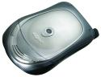
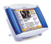
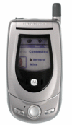
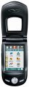
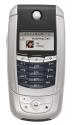
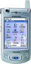

|
|
| The Linux Mobile Phones Showcase |
Updated Jun. 29, 2005
This LinuxDevices guide provides pointers to our coverage of Linux-based mobile phones, feature phones, and smartphones. For Linux-based IP phones (phones for use with VoIP systems), click here.
Some believe that 2005 will become the year of the Linux mobile phone, as manufacturers flock to off-the-shelf operating systems in order to cut costs and speed time to market, while managing the increasing complexity of their wares. Yet others think that the Linux phone story may not unfold until 2006 or even later. Be sure to read our "Linux on a roll in mobile phones" special feature for a look at the different opinions, as well as the run-up to 2005 in announcements, issues, and emerging trends:
HOT TOPIC: Linux on a roll in mobile phones
And now, let's let the devices speak for themselves . . .
Mobile phones, feature phones, and smartphones . . .
Datang 3G Linux phone reference design -- [Nov. 11, 2004] -- China's government-owned TEM (telecommunications equipment manufacturer) has developed a 3G Linux mobile phone reference design, expected to appear in products in mid-2005. Datang's Linux phone design works with networks based on TD-SCDMA, a 3G technology largely invented by Datang, which may see use outside China. details
E28 E2800 -- [Dec. 14, 2003] -- A Chinese company based in Shanghai named "E28" has quietly been selling Linux-based smartphones in China since August, and today launched its Linux device in Hong Kong. The company also claims to be in talks with US and European companies to bring the device to those regions, according to one source. E28's E2800 smart phone sells for about $600, and targets business users, offering PDA functions, touch-screen, handwriting recognition, a camera, and memory expansion to 512MB through an SD memory card. details
E28 E2800+ -- [Aug. 10, 2004] -- Shanghai-based E28's e2800+ has been available in China since July, and builds upon E28's previous e2800 model, which was the world's first commercially available Linux smartphone, E28 says. The device, which targets business users, currently features dual-band 900/1800MHz communications, a GPRS/CSD modem, and a 300K pixel camera. A model that supports US communications standards at 900/1800/1900MHz is set to be launched shortly. details
Ericsson cordless webpad/phone -- [Nov. 6, 2000] -- This device (formerly called the HS210 Cordless Screen Phone), is basically a wireless webpad with a built-in telephone and Bluetooth wireless technology for in-home use. It can surf the web, check email, send voice clips, and make phone calls. The embedded computer is based on an Intel StrongARM processor. details
Haier N60 -- [Mar. 14, 2005] -- A tri-band GSM/GPRS Linux cameraphone that supports WiFi and Bluetooth through an SDIO interface. Has a QVGA (240 x 320) color touchscreen, a 1.3 megapixel camera, and an integrated MP3 player. details
Motorola A760 Linux/Java handset/PDA -- [Feb. 14, 2003] -- This initial Motorola Linux/Java handset offering combines the functions of a mobile phone, PDA, digital camera, video player, MP3 player, speakerphone, messaging, Internet access, and Bluetooth wireless technology. Motorola will initially launch the A760 handset in Asia in 2003. details
Motorola A768 -- [Feb. 19, 2004] -- A Linux-powered smartphone targeting enterprise customers now shipping in China. The A768 is essentially a revision of Motorola's first Linux-based smartphone, the A760, with new VPN, video, and other capabilities. details
Motorola A780 -- [July 29, 2004] -- US mobile phone customers will at last gain the option of a Linux-based handset later this year, when operators begin offering a high-end Motorola Linux/Java smartphone aimed at business professionals. The A780 will roll out globally in early Q4, reaching select US regions before 2005, according to Motorola. details
Motorola E680i -- [Apr. 11, 2005] -- A Linux-based MP3 player and cameraphone that support stereo bluetooth audio connectivity, an improved interface with full HTML browser, and user-upgradable storage. Details here and here
Motorola E680 -- [Mar. 09, 2004] -- The E680, expected in late 2004, will include built-in stereo speakers and will download music and other multimedia files over USB, Bluetooth, or a cellular phone link one third the speed of a typical home DSL connection. MPEG4-enabled camera with 8x zoom, Java, and many PDA-like features. details
Motorola E895 -- [Jun. 27, 2005] -- A tri-band GSM Linux/Java phone targeting Asian markets, the E895 has a 1.3 megapixel camera, large TFT/LCD display, Bluetooth, and rich Internet, multimedia, and web capabilities, Motorola says. Details
NEC N900iL -- [Nov. 19, 2004] -- NTT DoCoMo and its regional subsidiaries are offering business subscribers a dual-network 3G/VoIP handset that works as a 3G mobile phone, VoIP (voice-over-IP) terminal, or both simultaneously. The N900iL is based on a Linux-based 3G mobile phone software platform developed jointly by NEC and Panasonic. details
ROADModel S101 -- [Feb. 18, 2005] -- Flipping the Model S101 open reveals a keyboard and screen for interacting with computer applications. Flip it closed again, and it's a GSM phone. The Model S101 is based on a 400 MHz Intel XScale PXA263 processor running a Linux 2.6 kernel along with Trolltech's Qtopia graphical user interface and PIM suite. It comes with 64 MB of RAM and 64 MB of flash memory, measures 128 x 60 x 25 mm, and weighs in at 210 grams. details.
Samsung Qtopia -- [Mar. 20, 2005] -- A Linux-based phone, that's apparently based on the same hardware as the older SCH-i519, but with runs Qtopia Phone Edition, an off-the-shelf Linux application environment for mobile phones that shipped in May, 2004. The Samsung phone also supports UWB (ultra wideband) networking. details
Samsung SCH-i519 -- [Dec. 16, 2003] -- Samsung has begun shipping a new Linux-powered smartphone in China. The Samsung SCH-i519 smartphone supports both Chinese and English, and works with the CDMA2000 1x network of China's #2 wireless provider, Unicom. The device features voice control, a powerful 400MHz XScale PXA255 processor, and a Linux OS and software suite from Mizi Research. Our Device Profile features extensive details and many screenshots. details
Siemens Concept Device -- [Mar. 21, 2005] -- A digital video broadcast receiver that downloads programming over a cellular network, the Siemens concept device can also be used to make calls. details
SK Telecom IMT2000 WebPhone -- [Sep. 19, 2000] -- This combination cell phone + PDA has a 4" LCD screen and a built in video camera. It looks like a PDA but has a built-in CDMA cell-phone module inside its case. It is based on a StrongARM SA1110 206MHz CPU, and has 32MB of RAM plus up to 32MB of internal flash memory. details
Telepong mobile phone -- [Nov. 15, 2001] -- Currently under development, this device is aimed at the Euro "tweens market". It runs on a Linux-based operating system and has a built-in GPRS module, a 65K color display, and provides a WAP 1.2.1. compliant browser. It is EMS enabled and comes with a camera interface and a joy stick for embedded games. details
Yahua TelTech "Normandy" -- [Sep. 27, 2004] -- A Chinese ODM (original device manufacturer) will ship a mobile phone based on Linux and Qtopia in Q1 of 2005. Yuhua TelTech's "Normandy" phone will use Qtopia Phone Edition (QPE), an application stack for mobile phones that includes a PIMS and other PDA-like features. details
Yulong Coolpad 858 -- [Apr. 8, 2005] -- A GSM/CDMA phone from an ODM in Shenzhen, the Coolpad is based on Qtopia Phone Edition and runs a Linux-derived OS called LinuOS. Details
Wildseed mobile phone -- [May 12, 2004] -- This Linux-based wireless phone combines communications and entertainment in a uniquely customizable two-part design. The company plans to initially aim the device at the U.S. "teen market", by offering a colorful phone with "cool teen-oriented capabilities". It's built around an XScale microprocessor running Linux kernel 2.4.x. Clip-on "SmartSkins" provide customized look and feel, games, MP3 player, and more. Launch: July, 2004. details
ZTE e3 -- [Jun. 27, 2005] -- A dual-band GSM phone with a unique pivoting touchscreen, from one of China's largest telecom equipment makers. ZTE's e3 has strong multimedia and video capabilities, along with handwriting recognition and Chinese-English translation software. It includes a 1.3 megapixel camera, supports numerous multimedia formats, stores up to 10 hours of MP3s, and boasts an Opera web browser with small-screen rendering technology. Details
Talk back!
Questions? Comments? talkback here!
 |
|
|
|
|
|
|
|
 Use of this site is governed by our
Terms of Use
and Privacy Policy.
Except where otherwise specified, the contents of this site are copyright © 1999-2005
Ziff Davis Publishing Holdings Inc.
All Rights Reserved. Reproduction in whole or in part without permission is prohibited. Linux is a registered trademark of Linus Torvalds. All other marks are the property of their respective owners.
Use of this site is governed by our
Terms of Use
and Privacy Policy.
Except where otherwise specified, the contents of this site are copyright © 1999-2005
Ziff Davis Publishing Holdings Inc.
All Rights Reserved. Reproduction in whole or in part without permission is prohibited. Linux is a registered trademark of Linus Torvalds. All other marks are the property of their respective owners.


 news feed
news feed